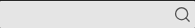
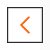
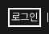

- 1 현황 조사 · 완료
- 2 방향 설정 · 완료
- 3 기반 규칙 · 진행 중
- 4 컴포넌트 · 예정
- 5 통합 검증 · 예정
01. 보존하는 정체성
DS-016 변경 원칙: 명확한 접근성·통일성·사용성 문제가 없으면 기존 디자인을 유지한다. 바꾸기 전에 실제 문제·사용처·상태와 해결 효과를 제시한다.
방향 확정 · DS-001·002
어두운 큰 면, 선명한 주황, 원과 선, 접힌 모서리. 이 특징과 정보 구조를 유지하면서 읽기·조작 문제에 필요한 세부 디자인을 조정한다.
02. 색의 전체 구성
브랜드 주황 / 중립색 / 정보 링크 / 오류의 네 계열로 구성한다(DS-009). 주황 조합과 배경·글자·내용 경계의 중립색 역할은 값까지 확정했다. 정보 링크·오류·주요 실행도 기본값과 첫 적용 범위를 확정했다. 컴포넌트별 상태 조합은 4단계에서 이어간다.
#ff6914
값·조합 확정그래픽·선택 표시
기존 흰 글씨 유지
흰색 + 회색 단계
기본 역할 확정배경·본문·경계
일반 행동·초점
확정 #2867cf
DS-011 확정연락처·홈페이지
정보에 연결하는 글자
현재 red-600
DS-013 확정입력 오류 안내
위험 행동과 구분 필요
| 색의 역할 | 현재 값 / 결정한 값 | 상태와 남은 결정 |
|---|---|---|
| 브랜드 주황 면 + 글자 | #ff6914 + 기존 흰 글씨 | DS-007 확정 · 기존 구현 유지. 대비 미달은 알려진 한계로 보류. |
| 밝은 기본 면 / 보조 면 | white / neutral-50·75·100 | DS-010 확정: 기본 white / 약한 구분 50 / 묶음 100. 75는 기존 예외. |
| 어두운 큰 면 | neutral-900 #171717 neutral-850 #1e1e1e 등 | 어두운 면 보존은 확정. DS-010으로 900·850의 기존 맥락을 구분해 유지. |
| 본문 / 보조 글자 | neutral-950·800·700 / 500·400 등 | DS-010 확정: 주요 950 / 설명 700 / 보조 500. 회색 면의 작은 보조 글자는 600. |
| 경계·구분선 | neutral-200 #e5e5e5 neutral-300 #d4d4d4 | DS-010 확정: 내용 구분선 200 / 더 뚜렷한 경계 300. 입력 경계는 후속 검토. |
| 입력 예시 | neutral-500 #737373 | DS-008 확정 · form/Text·TextArea에 적용. |
| 보조 버튼 글자 | neutral-600 #525252 | DS-008 확정 · ui/Button secondary에 적용. |
| 텍스트 입력 초점 | 추가 외곽선 없이 기존 캐럿 유지 | DS-012 확정. Text·TextArea의 추가 외곽선 제거. 검색 추가안도 철회. 다른 컨트롤 초점은 별도. |
| 주요 실행 | 기본 #404040 / 호버 #737373 흰 글자 | DS-014 확정·적용. 추가·예약 11곳에 연결. 승인한 비교와 적용 확인. 위험 행동·어두운 면·공통 상태는 후속 검토. |
| 정보 링크 | #2867cf 항상 밑줄 1px · 간격 2px | DS-011 확정. B 적용·표본 확인. 가독성과 링크 식별을 함께 개선. |
| 오류 | 현재 red-600 | DS-013 확정: 흰색·neutral-50의 오류 문장에 기존 값 유지. 다른 배경·위험 행동은 별도. |
현재 앱에 등록된 중립색 팔레트
#ffffff#fafafa#f8f8f8#f5f5f5#e5e5e5#d4d4d4#a3a3a3#737373#525252#404040#262626#1e1e1e#171717#0a0a0a03. 타이포그래피
Pretendard Variable · 읽는 본문
지원자는 신청 기간과 제출 서류를 먼저 확인해 주세요. 프로그램의 일정과 참여 조건을 읽고 담당자에게 문의해 주세요.
Read the application requirements carefully and prepare your supporting documents.
기본 14px / 400 / 줄높이 28px. 기존 크기로 복원했다. 글 고유 제목은 20px/600/28px, 공지·새 소식 보조 정보는 13px/400을 유지한다.
메인 슬로건 · Gowun Batang
Computer Science
메인 슬로건의 전용 서체는 유지한다. 일반 UI와 공유 본문의 기본 서체는 Pretendard Variable이다.
기존 역할·예외 유지페이지·섹션 제목·보조 정보의 역할표로 기존 기준과 예외를 정리했다. 역할이 다른 값은 임의로 통일하지 않는다.
04. 행동 강조와 입력
입력 예시와 기본 입력
주요 실행은 짙은 중립색
추가·저장·게시·예약처럼 작업을 완료하는 행동은 짙은 중립색을 기본으로 한다. 주황의 그래픽·선택 역할은 유지한다.
기본 #404040 / 호버 #737373 / 흰 글자를 추가·예약 11곳에 적용했다. 대표 4장면은 승인안과 일치했고 한국어·영어 사용처를 확인했다. 대학원 장학은 로컬 404로 확인이 남는다. 위험 행동·어두운 면·공통 상태는 4단계에서 검토한다.
적용 측정 기록 · 승인한 전후 견본05. 문구
방향 확정 · DS-005 / 앱 적용은 후속짧은 행동명, 차분한 존댓말, 실제 행동과 결과. 필요한 대상을 생략하지 않고, 할 수 없는 재시도나 확인되지 않은 저장 결과를 안내하지 않는다.
제목을 입력해 주세요.
06. 지원 범위와 아직 정하지 않은 것
공개 기능은 모바일까지
탐색·읽기·검색·일반 예약은 모바일과 데스크톱을 지원한다. 행정실 편집·관리는 데스크톱 중심으로 설계한다.
아이콘·레이아웃·컴포넌트
타이포의 기존 역할·예외는 DS-016에 따라 정리했다. 아이콘 기반 기준과 승인한 첫 적용은 정리했다. 반응형 배치·간격을 조사 중이며 모서리·크기·그림자와 나머지 컴포넌트 상태는 남아 있다.
07. 아이콘과 상태
DS-017 · 헤더 검색 호버 적용밝은 검색 바 #e5e5e5에서 기본 #737373 → 호버 #404040으로 진해진다. 기존 색 변화 피드백을 유지한다. 돋보기 그림 20px·선 굵기 1.5와 크기·배치는 유지했다.
기본 · 기존 유지
호버 · 더 진한 회색

DS-018 · 검색 클릭 영역 적용
헤더 검색은 24×30px, 세미나·모바일 검색 실행은 24×24px로 눌리는 영역을 넓혔다. 그림·위치는 유지하며 입력 폭만 2~2.5px 줄어든다. 영역 비교와 근거 · 실제 적용 기록.
DS-021 · 연구실 자료 링크 적용
PDF·영상은 기본 #737373 → 호버 #262626. 기존 그림·크기·배치와 12px 링크 간격을 유지하며 밝은 면의 공통 초점을 연결했다. 한·영 두 폭의 기본 4장이 승인 견본과 일치했다.
08. 키보드 초점
DS-019 · 카드 화살표 표시 / DS-020 · 공통 모양 적용카드 행에 키보드 초점이 들어오면 양쪽 화살표가 보인다. 현재 대상은 2px 실선 / 2px 간격으로 구별한다. 밝은 면은 #404040, 어두운 면은 흰색, 두 배경의 경계는 짙은 선과 흰 보조선을 쓴다.
밝은 면 · 화살표

어두운 면 · 로그인

앱 적용: 교과목 화살표, 헤더 상단 조작, 검색 실행, 교수 정렬. 대표 네 장면이 승인 견본과 일치했다. 입력은 DS-012의 캐럿 중심 표시를 유지한다.
규칙 확정·적용 대기: 나머지 버튼·링크·복합 선택은 4단계에서 사용처별로 연결하고 잘림·줄바꿈 등을 확인한다.
09. 배치·간격
3-5 조사 중 · 기존 역할별 여백 유지일반 본문의 모바일 좌우 20px, 데스크톱 본문 틀 안쪽 왼쪽 100px·오른쪽 360px를 출발점으로 정리했다. 푸터·메인·폼은 역할이 달라 같은 여백으로 일괄 통일하지 않는다.
한·영 20개 폭/언어 상태를 확인했다. 영어 모바일 푸터의 긴 링크와 640~1199px의 전체 가로 넘침이 남아 있다. 새 전환값·최소 지원 폭은 아직 미확정이다. 현재 값·책임·남은 조사.
아이콘 기반 정리 완료 · 배치·간격으로 진행
DS-021 적용: 연구실 PDF·영상은 기본 #737373 → 호버 #262626, 공통 초점 2px/2px를 사용한다. 한·영 두 폭의 기본 4장이 승인 견본과 일치했다.
자료 아이콘 적용 보기 · 아이콘 기준과 4단계에 남은 상태
다음 판단: L-Q1 모바일 푸터의 긴 링크 줄바꿈. 기존 열·글자·색을 유지하면서 화면 밖으로 나가는 링크를 열 안에서 읽도록 하는 제안이다. 앱 미적용.